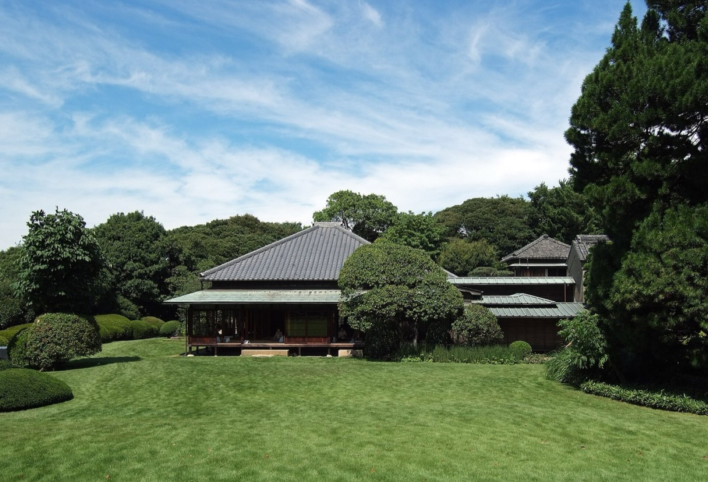

ABOUT千葉県宅地建物取引業協会は、宅地建物取引業の適正な運営を確保し、業界の健全な発展を図るため、研修等により会員を指導育成するとともに消費者の利益を保護することで、公共の福祉に貢献することを目的としています。昭和42年7月、宅地建物取引業法第74条に基づき、千葉県知事の許可を得て設立された県下宅建業界唯一の一般社団法人です。
県下11ヵ所に支部を置き、現在県内の不動産業者の約8割にあたる4,000社が加入しています。当松戸支部は、335社の会員を擁する大支部です。(令和6年3月31日現在)
松戸支部では、弁償業務、苦情解決業務をはじめ会員の研修業務、総合的な保証制度の研修などを実施しています。
※現行サイトの「事業案内」「支部案内」の記載を移行しています。内容の見直しがあればご指示ください。
─ スローガン ─ われわれ宅建松戸は「たより"guys"(ガイ)」のある集団です。
| 本部理事 | 支部長 橋本 孝司 / 支部長代理 岡田 純 / 理事 平川 嘉博 / 理事 鈴木 誠 |
|---|---|
| 副支部長 | 榎戸 勝治 |
| 監査 | 山本 浩正 / 岩田 浩 |
| 総務委員会 | 担当理事・副支部長 平川 嘉博 / 委員長 榎戸 勝治 / 副委員長 下堀 大介 / 委員 吉岡 知恭・長谷川 直紀 街づくり協議会: 市川 恵一・高橋 和義 |
|---|---|
| 財務委員会 | 担当理事・副支部長 岡田 純 / 委員長 星野 卓士 / 副委員長 稲葉 昇久・永田 雅之 / 委員 髙宮 惇 |
| 綱紀・研修委員会 | 担当理事・副支部長 鈴木 誠 / 委員長 有田 晋司 / 副委員長 萩谷 裕二 / 委員 橋本 竜馬・松永 洋平・各地区長・事務所調査員 |
| 厚生委員会 | 担当理事・副支部長 榎戸 勝治 / 委員長 入江 達也 / 副委員長 下堀 大介(ゴルフ)・本多 伸行(旅行)・八木野 玄揮(新年会) / 委員 大村 恭弘・長谷川 直紀 |
| 広報委員会 | 担当理事・副支部長 橋本 孝司 / 委員長 大川 隆永 / 副委員長 髙阪 克宏・吉岡 知恭 / 委員 宮浦 英示 |
| 入会審査委員会 | 担当理事・副支部長 岡田 純 / 委員長 野田 亮 / 副委員長 長谷川 和芳・川津 久美子 / 委員 大村 恭弘・佐々木 敦也 |
| 無料相談業務委員会 | 担当理事・副支部長 橋本 孝司 / 委員長 斉藤 雅浩(市民相談) / 副委員長 坂巻 信一郎(苦情相談)・下堀 大介(空家相談) / 委員 宮内 みさ子・村木 英彦・中園 学・渡邉 裕介 |
| 流通委員会 | 担当理事・副支部長 平川 嘉博 / 委員長 大塚 貴久 / 副委員長 石川 裕一 / 委員 吉岡 知恭・佐々木 敦也 |
| 千葉県政治連盟 松戸地区 | 地区長 橋本 孝司 / 副地区長 鈴木 誠 / 委員 平川 嘉博・岡田 純 |
|---|---|
| 総括地区長 | 総括地区長 齋藤 弘志 / 副総括地区長 入江 達也 |
| 松戸・矢切地区 | 地区長 斉藤 雅浩 / 副地区長 髙宮 惇・有田 晋司 |
| 北松戸・馬橋地区 | 地区長 野田 亮 / 副地区長 吉岡 知恭・石川 裕一 |
| 小金・新松戸地区 | 地区長 大村 恭弘 / 副地区長 大川 隆永・大塚 貴久 / 地区長補佐 坂巻 信一郎 |
| 京成松戸地区 | 地区長 入江 達也 / 副地区長 稲葉 昇久 |
| 常盤平・五香地区 | 地区長 齋藤 弘志 / 副地区長 下堀 大介・星野 卓士 |
※現行サイトの「役員委員会分掌表」を全件移行しています。役員改選等で変更がある場合は事務局よりご連絡ください。
不動産業の開業には、宅地建物取引業の免許取得をはじめ、様々な手続きが必要です。宅建協会では、開業をお考えの方への支援・ご案内を行っています。
入会に関するご相談・資料請求は、お気軽に事務局までお問い合わせください。
入会案内を見る| 名称 | 一般社団法人 千葉県宅地建物取引業協会 松戸支部 |
|---|---|
| 所在地 | 〒271-0064 千葉県松戸市上本郷3185 |
| アクセス | JR常磐線 北松戸駅 徒歩約8分 |
| TEL | 047-364-6904 |
| FAX | 047-363-3142 |
| 業務時間 | 月〜金 AM9:00〜PM5:00(土日・祝日休) ※宅建取引士法定講習会の申込受付はPM4:30まで |